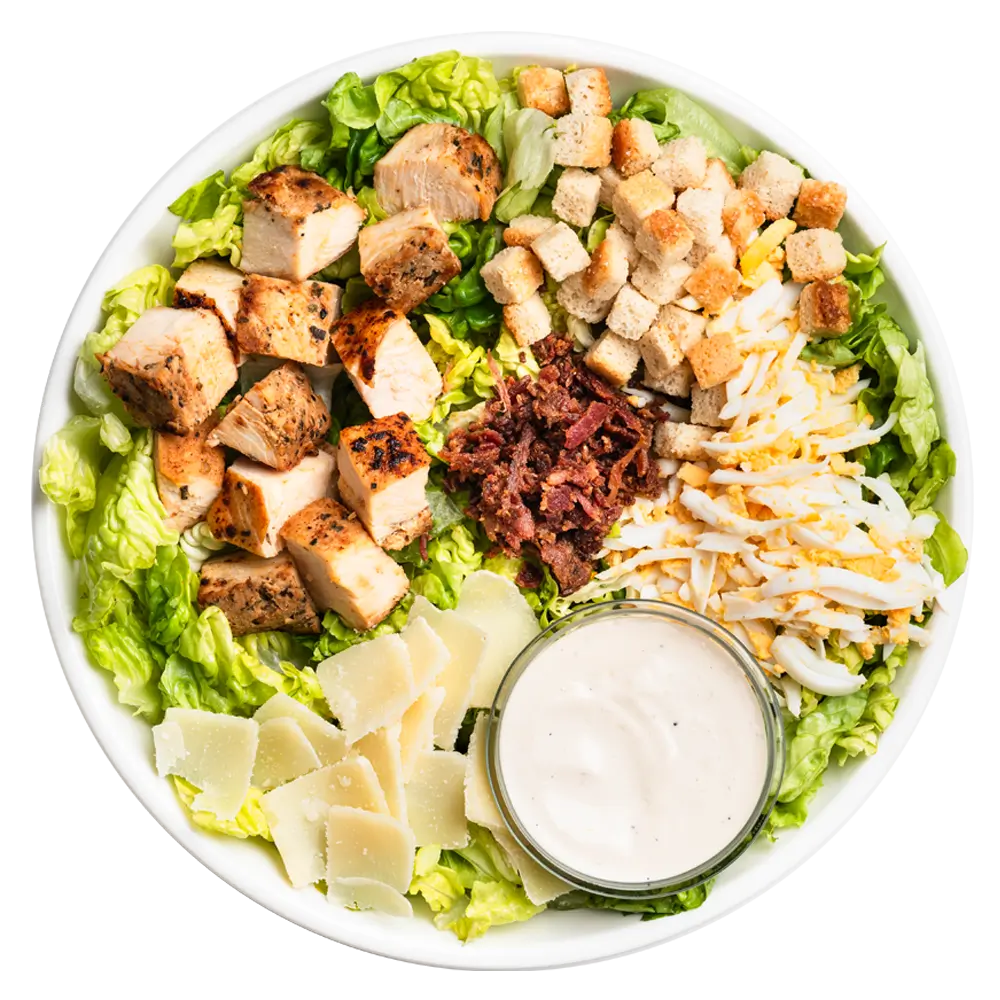

Ensalada César con Pollo Gourmet
La receta clásica de la ensalada César, mejorada con pollo jugoso a la parrilla y nuestra vinagreta secreta de la casa.
⏱️ Tiempo total: 25 min
🍴 Porciones: 2
💪 Dificultad: Media

Ingredientes
- Para el Aderezo:
- 2 yemas de huevo (o mayonesa, para simplificar).
- 1 diente de ajo picado fino.
- 1 cucharada de jugo de limón fresco.
- 1 cucharadita de mostaza Dijon.
- 1/2 taza de aceite de oliva extra virgen.
- 1/4 taza de queso Parmesano rallado.
- Sal y pimienta negra al gusto.
- Para la Ensalada:
- 2 pechugas de pollo.
- 1 cabeza grande de lechuga romana, limpia y troceada.
- 1 taza de crutones caseros.
- Más queso Parmesano para servir.
Preparación
- Paso 1: Pollo a la Parrilla. Sazona las pechugas de pollo con sal y pimienta. Cocínalas a la parrilla o sartén hasta que estén doradas y completamente cocidas. Deja reposar 5 minutos y luego córtalas en tiras.
- Paso 2: Preparar el Aderezo. En un tazón pequeño, mezcla el ajo, jugo de limón, mostaza y yemas (o mayonesa). Bate vigorosamente. Lentamente, añade el aceite de oliva en un chorro fino mientras sigues batiendo hasta que emulsione y espese. Incorpora el queso Parmesano, sal y pimienta.
- Paso 3: Montaje. En un tazón grande, coloca la lechuga romana. Vierte una cantidad generosa de aderezo (sin exagerar). Mezcla suavemente para cubrir todas las hojas.
- Paso 4: Finalización. Coloca la ensalada en los platos de servir. Añade las tiras de pollo a la parrilla por encima, decora con los crutones y un poco más de queso Parmesano rallado. Sirve de inmediato.